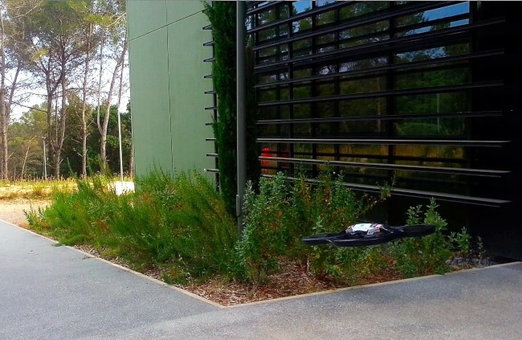
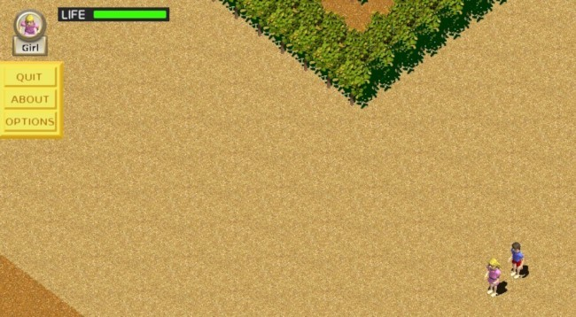
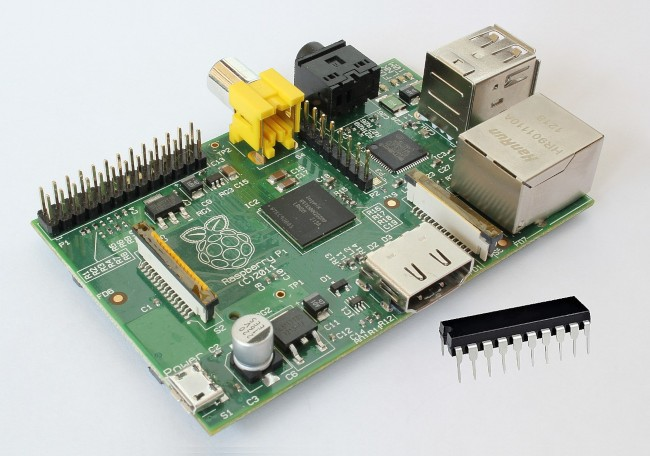

From the basics (math, physics and chemistry) to electronics (analog and digital), signals, computer architectures, computer programming, networks, databases, operating systems, etc.
More in-depth study of topics from the Bachelor's degree, discovery of new ones, like multimedia and graphics, and improvement of practical skills thanks to the work on team projects.
18 months at Eurecom, an international engineering graduate school in the south of France, within a double degree program between Politecnico di Torino and Télécom ParisTech.
Research and development for the IoT (May 2015 - Present)
Working on the security system and other main components of the VITAL European project (vital-iot.eu), developing a solution to integrate heterogeneous IoT systems.
Study and implementation of the W3C/IETF WebRTC standard for GPAC (gpac.wp.mines-telecom.fr) in order to develop advanced streaming features. A native and a web application were developed.
Part-time assistance to teaching (March - July 2013)
Assistance to the students of Computer Science and Database courses illustrating the theoretical constructs and helping them to find the problems in their code. Assistance during the exams was also provided.
A software to monitor the stability of a weather radar (able to perform precise and accurate rainfall measuring) was developed on a Linux platform in C.
Development of autonomous navigation functions for the Parrot’s AR.Drone 2.0, focusing on tracking and following people.

The first part of the project consisted in the design of a fast and reliable color-based algorithm to track people's t-shirts. Then a piece of software was developed in C/C++ (for Linux), able to process in real-time the images coming from the drone's camera, apply the algorithm to track the person and send back commands based on a well-specified strategy.
For more details and an overview of the results please watch the video here below.
A game developed for the SoftDev (Software development methodologies) course at Eurecom.

It is written mainly in Python and XML and it uses the FIFE game engine; I have developed it on a Linux platform starting from the "Rio de Hola" demo bundled with the game engine and adding more and more features to make it a full game.
Development of an autonomous system to collect, process and send to a server environmental data (temperature, humidity and dust).

A Microchip PIC and a Raspberry Pi (Linux) were used. The former was tin soldered to a board and connected to the sensors and to a USB connector, while the Raspberry Pi was programmed to receive the data through the PIC and a USB cable, process it and send it to an external central server.
A game developed for the Computer Graphics course at Politecnico di Torino.
It is written in C/C++ and it uses the OpenGL graphic libraries; I have developed it on a Windows platform from scratch using the modeling software Blender to create the 3D environment. It is a first person platform game.
{kind=link}
{kind=link}
{kind=link}
{kind=link}
{kind=link}
{kind=link}
{kind=link}